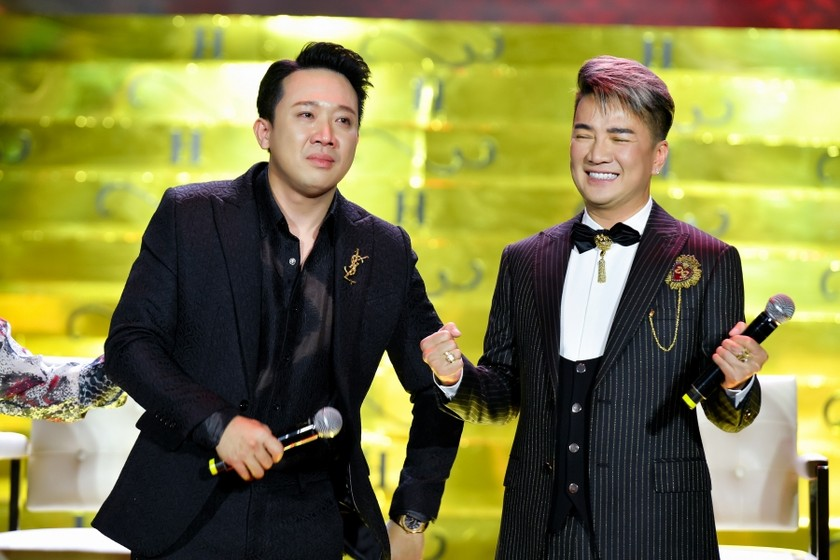

Trấn Thành khóc nức nở khi nói về 4 chữ “hào quang rực rỡ” của người nghệ sĩ
Tại buổi họp báo công bố dự án phim điện ảnh “Hào quang rực rỡ” (The King) tái hiện cuộc đời đa sắc màu của chính mình, trải dài qua nhiều giai đoạn của nền giải trí, âm nhạc Việt Nam từ thập niên 80-90 cho đến nay, ca sĩ Đàm Vĩnh Hưng cho biết: “Tôi đã ấp ủ ý tưởng thực hiện phim điện ảnh về hành trình hoạt động nghệ thuật của mình từ rất lâu rồi nhưng mãi đến tận hôm nay kế hoạch đó mới chính thức khởi động. Trùng hợp lại đúng luôn vào dịp kỷ niệm 25 năm sự nghiệp ca hát của mình. Tôi được gặp những bạn trẻ có tài, họ đều là những người rất giỏi trong lĩnh vực của họ đang theo đuổi. Đúng người - đúng thời điểm, không có lý do gì mà tôi chần chừ nữa, tôi gật đầu đồng ý giao phó câu chuyện đời mình cho họ liền”.
Dự án sẽ được sản xuất bởi MAR6 Pictures, với ê-kíp sáng tạo phát triển kịch bản dựa trên câu chuyện có thật về cuộc đời của Đàm Vĩnh Hưng. Hà Đỗ đảm nhận vai trò Giám đốc sáng tạo, NSND Lê Khanh cũng tham gia vào đội ngũ sản xuất với vai trò Huấn luyện diễn xuất hóa thân cho các diễn viên trong phim. Cũng theo Đàm Vĩnh Hưng, anh và ê-kíp cho biết sẽ bắt đầu công tác casting các diễn viên đóng vai ca sĩ Đàm Vĩnh Hưng qua các giai đoạn cuộc đời từ thời thơ ấu đến tuổi trưởng thành. Bên cạnh đó, các nhân vật có ảnh hưởng, xuất hiện trong cuộc đời của anh như mẹ, Hoài Linh, Dương Triệu Vũ, Vũ Hà cùng những ca sĩ nổi tiếng cùng thời Làn Sóng Xanh như ca sĩ Mỹ Tâm, Lam Trường, Đan Trường… cũng sẽ được tuyển chọn qua các buổi casting công khai khắp cả nước. “Tôi rất mong muốn ê-kíp và đạo diễn tuyển chọn được diễn viên phù hợp nhất để đóng vai Đàm Vĩnh Hưng qua các giai đoạn và những nhân vật khác trong phim. Tôi cũng rất háo hức được trải nghiệm cảm giác xem ê-kíp làm phim kể câu chuyện về tôi dưới góc nhìn qua điện ảnh của những người trẻ sẽ như thế nào”, nam ca sĩ giãi bày.
Đạo diễn Nam Cito cho biết, họ sẽ chỉ “chắt lọc những sự kiện đáng chú ý và các nhân vật trọng tâm trong hành trình từ 'zero đến hero' của Đàm Vĩnh Hưng để kể nên câu chuyện mang tinh thần tích cực và truyền cảm hứng đến mọi thế hệ qua góc nhìn điện ảnh”. Trong khi đạo diễn Bảo Nhân nói thêm: “Chúng tôi sẽ phát triển kịch bản theo hướng đây là một bộ phim mang nhiều yếu tố giải trí, màu sắc thanh xuân trẻ trung, tươi sáng chạm vào ký ức thanh xuân của rất nhiều khán giả. Và đây cũng sẽ là một bộ phim đầy nhiệt huyết và đam mê về giai đoạn đầu rực rỡ của nền âm nhạc Việt thông qua hành trình trở thành ngôi sao ca nhạc Đàm Vĩnh Hưng”. Trong khuôn khổ của sự kiện, Đàm Vĩnh Hưng đã mời hai nhân vật đặc biệt là ca sĩ Quang Linh và đạo diễn, diễn viên - MC Trấn Thành. Trong ký ức của ca sĩ Quang Linh, Đàm Vĩnh Hưng là một người em rất kiên trì với tình yêu âm nhạc. Từ thuở những năm 90, khi Quang Linh là một ngôi sao ca nhạc, “Tôi đi đến đâu thì “sập” sân khấu đến đó vì khán giả quá đông, thì Đàm Vĩnh Hưng vẫn còn là một ca sĩ hát lót. Thời ấy, hát lót cũng chia ra nhiều cấp A-B-C và Hưng thuộc hàng A. Khi đi tỉnh, nếu như các ca sĩ trẻ thời đó tụ tập chơi bài, ăn uống bí tỉ cùng nhau thì Đàm Vĩnh Hưng ngồi một góc luyện thanh làm cho tôi phải chú ý. Một hôm, tôi chuẩn bị ra xe hơi riêng để về sau buổi diễn thì Hưng đến, nhỏ nhẹ xin tôi cho đi nhờ xe đến chỗ tập thể dục. Hóa ra, ngoài thời gian luyện thanh, cậu ấy còn chăm chỉ thể dục thể thao nên mới có hình thể mà đến tận bây giờ, thanh niên trai tráng cũng phải ngưỡng mộ”, Quang Linh nhớ lại.
Trước những lời chia sẻ của Đàm Vĩnh Hưng nghệ sĩ Trấn Thành không giấu được cảm xúc và đã khóc trên sân khấu với những tâm sự cùng Đàm Vĩnh Hưng: “Đời nghệ sĩ “khó nuốt” hơn quý vị nghĩ rất nhiều, mọi người đều trải qua nhiều thăng trầm. Nếu mà ai thích tiền, thích hào quang thì cứ lên đây để “nếm” 4 chữ “hào quang rực rỡ” đi rồi biết nó là cái gì”. Trấn Thành không khỏi ngưỡng mộ đàn anh khi thẳng thắn thừa nhận rằng, “mình có đẻ 10 kiếp cũng không bao giờ được như anh Hưng lúc này. Nhìn 25 bộ trang phục của anh Hưng trải qua 25 năm sự nghiệp ca hát được trưng bày tại đây, tôi thấy như một bảo tàng thời trang của nghệ sĩ. Nếu tôi nói anh Đàm Vĩnh Hưng đã nổi tiếng được “một phần tư” thế kỷ cũng không sai vì nhìn vào sự nghiệp của anh, chúng ta có thể thấy được lịch sử âm nhạc Việt Nam qua các giai đoạn”.
Khi được Trấn Thành “khích tướng” rằng liệu “ông hoàng nhạc Việt” có dám “kể xấu” về chính mình hay không, Đàm Vĩnh Hưng cho biết: “Tôi tự nhận mình có nhiều khuyết điểm, chỉ là tôi giỏi giấu thôi. Tôi cũng xấu tính, cộc cằn, nói chuyện cũng có chút thô lỗ… nhưng chỉ vì cái áo nghệ sĩ khống chế tôi nhiều quá nên khán giả chưa thể thấy được những góc khuất lẫn khuyết điểm của Đàm Vĩnh Hưng. Nhưng tôi chắc chắn rằng, “Hào quang rực rỡ” sẽ phô bày ra cho mọi người biết những “sự thật” đó”. Và cảm ơn Trấn Thành vì đã trao gửi thêm ý tưởng cho kịch bản của bộ phim điện ảnh này”. “Hào quang rực rỡ” (The King) chuyển thể từ câu chuyện tiểu sử cuộc đời và sự nghiệp của Đàm Vĩnh Hưng, từ thời còn là một thợ cắt tóc vô danh cho đến vị trí ngôi sao hàng đầu. Đây cũng là lần đầu tiên có nhà sản xuất phim Việt mạnh dạn làm phim tiểu sử về nhân vật nổi tiếng đang còn đương thời. Phim dự kiến khởi chiếu vào năm 2024.